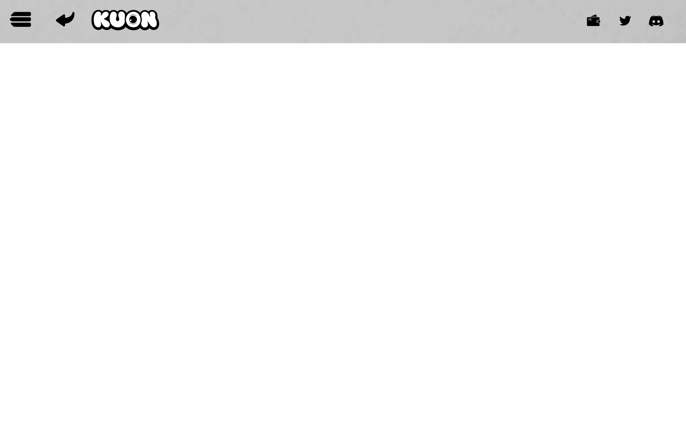
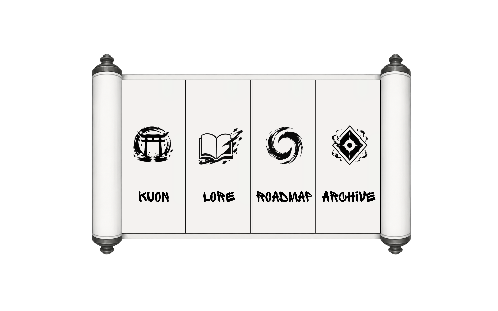

|




STATUS: SEALED
Return when the Gate opens.By accessing kuonnft.xyz and any services related to KUON, you agree to be bound by these Terms of Service. If you do not agree, please discontinue use of the website and related services.
Users must be at least 18 years old or the legal age of majority in their jurisdiction.
By using KUON, you represent and warrant that your participation complies with all applicable laws and regulations.
KUON NFTs are digital collectibles recorded on the blockchain through smart contracts.
All blockchain transactions are final and irreversible. KUON cannot reverse, cancel, or recover completed transactions.
Users are responsible for using a supported third-party wallet to purchase, hold, and transfer NFTs.
Users are solely responsible for the security of their wallets, private keys, seed phrases, passwords, and digital assets.
KUON is not responsible for any loss resulting from unauthorized access, phishing attacks, compromised wallets, lost credentials, or user error.
Ownership of a KUON NFT grants ownership of the NFT recorded on the blockchain but does not transfer ownership of KUON intellectual property, trademarks, artwork, branding, lore, or other project assets unless expressly stated otherwise.
Ownership is verified by the wallet holding the NFT on the blockchain.
All KUON artwork, logos, designs, lore, website content, branding, and related materials remain the exclusive property of KUON.
All rights not expressly granted are reserved.
KUON may collect limited information necessary for website functionality, analytics, security, and community operations.
By using the website, you consent to the collection and processing of such information.
KUON does not request or store users' private keys, seed phrases, or wallet passwords.
KUON NFTs are digital collectibles intended for artistic, entertainment, and community purposes only.
KUON NFTs are not securities, investment products, or financial instruments.
KUON makes no guarantees regarding future value, rarity, utility, market demand, or future project development.
NFT values may increase, decrease, or become worthless.
Participation in KUON is entirely at your own risk.
Users acknowledge that blockchain technology involves inherent risks, including but not limited to smart contract vulnerabilities, network failures, digital asset volatility, and third-party service failures.
KUON shall not be liable for:
All services are provided on an "AS IS" and "AS AVAILABLE" basis.
Any disputes arising from these Terms shall first be resolved through good-faith negotiation.
If a resolution cannot be reached, disputes may be submitted to arbitration or another appropriate legal process as permitted by applicable law.
Website: kuonnft.xyz
X (Twitter): @KUONNFT
Discord: 久遠 | KUON
Thank you for visiting KUON.
© 2026 KUON. All Rights Reserved.
KUON may collect limited information necessary for website functionality, analytics, security, and wallet-related interactions.
This information may include:
KUON does not request, store, or have access to users' private keys, seed phrases, or wallet passwords.
KUON does not sell personal information to third parties.
By using kuonnft.xyz, you consent to the collection and processing of such information.
KUON may utilize third-party services including wallet providers, analytics providers, hosting services, social media platforms, and content providers.
These services operate under their own terms and privacy policies.
KUON takes reasonable measures to help protect website functionality and user interactions. However, no method of electronic transmission or storage is completely secure, and KUON cannot guarantee absolute security.
KUON is a digital art and storytelling project.
Nothing contained on this website constitutes financial advice, investment advice, legal advice, or any other form of professional advice.
KUON NFTs are intended for artistic, entertainment, and community purposes only.
Users are solely responsible for conducting their own research and making their own decisions regarding digital assets, blockchain technologies, and related activities.
Users are responsible for maintaining the security of their wallets, private keys, seed phrases, passwords, devices, and internet connections.
KUON cannot recover lost wallets, private keys, seed phrases, passwords, digital assets, or blockchain transactions.
All blockchain transactions are final and irreversible.
All original KUON artwork, visual designs, logos, branding elements, story content, written materials, website content, and related assets are protected by applicable intellectual property laws unless otherwise stated.
Third-party content remains the property of its respective owners and is used under applicable licenses.
KUON, its creators, contributors, affiliates, and service providers shall not be liable for any direct, indirect, incidental, consequential, special, punitive, or exemplary damages arising from the use of this website.
This includes, but is not limited to:
All services are provided on an "AS IS" and "AS AVAILABLE" basis.
KUON reserves the right to modify, update, revise, or replace this Privacy & Credits page at any time without prior notice.
Any changes will be reflected on this page with an updated revision date.
Continued use of the website following any modifications constitutes acceptance of the updated policy.
The following music is used under their respective Creative Commons licenses.
Ronin by yoitrax
https://soundcloud.com/yoitrax
Music promoted on https://www.chosic.com/free-music/all/
Creative Commons Attribution 3.0 Unported (CC BY 3.0)
https://creativecommons.org/licenses/by/3.0/
Samurai Saké Showdown by Darren Curtis
https://www.darrencurtismusic.com/
Music promoted by https://www.chosic.com/free-music/all/
Creative Commons CC BY 3.0
https://creativecommons.org/licenses/by/3.0/
Konnichiwa by Alex-Productions
https://onsound.eu/
Music promoted by https://www.chosic.com/free-music/all/
Creative Commons CC BY 3.0
https://creativecommons.org/licenses/by/3.0/
EpicBattle J by PeriTune
https://peritune.com/
Music promoted by https://www.chosic.com/free-music/all/
Creative Commons CC BY 4.0
https://creativecommons.org/licenses/by/4.0/
All music remains the property of its respective creators and is used in accordance with the terms of their respective Creative Commons licenses.
Website: kuonnft.xyz
X (Twitter): @KUONNFT
Discord: 久遠 | KUON
© 2026 KUON. All Rights Reserved.